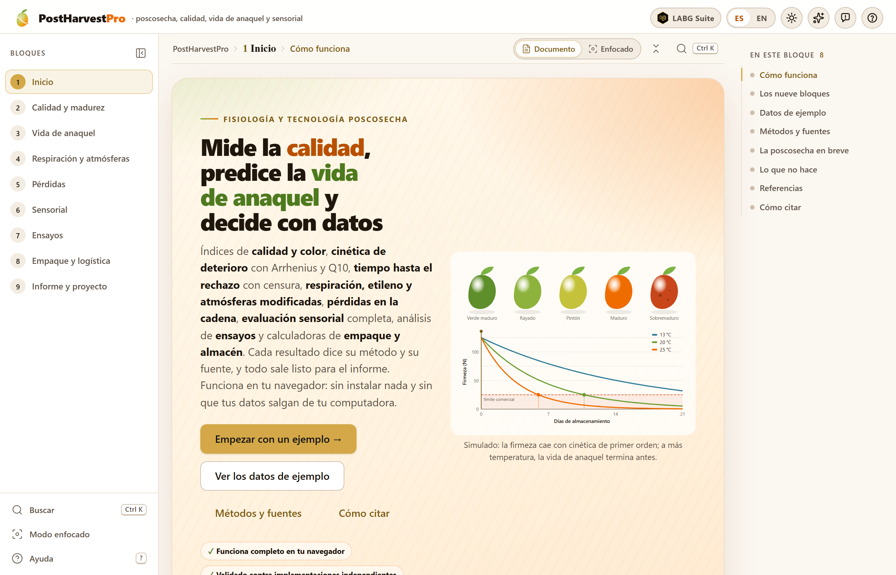
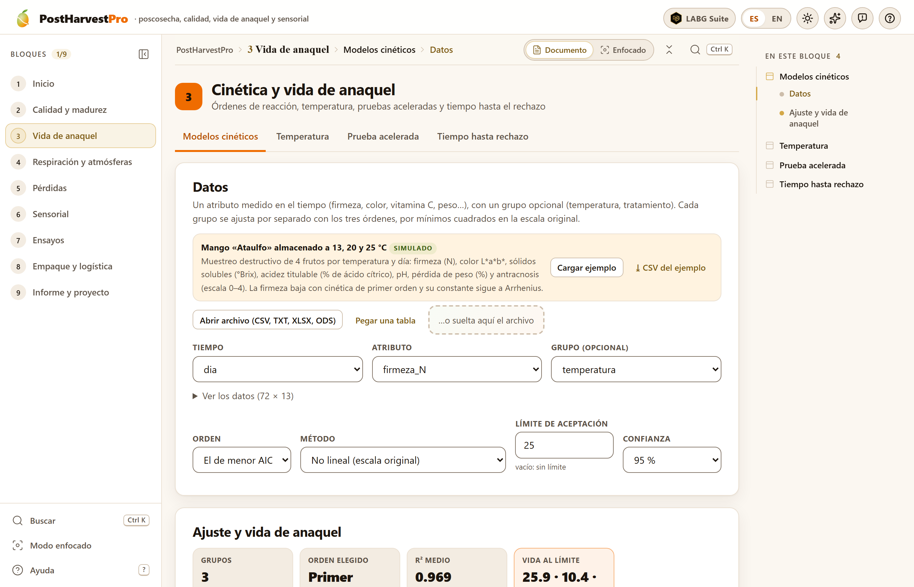
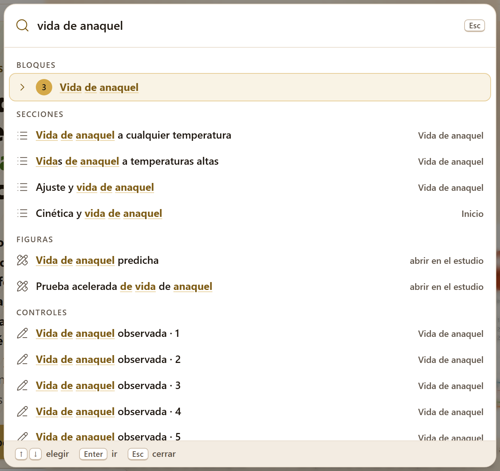
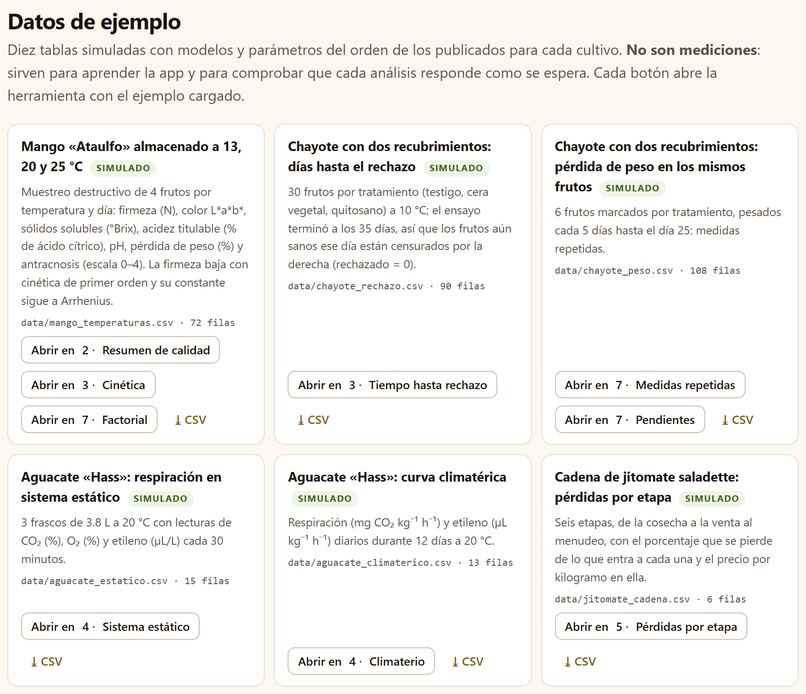
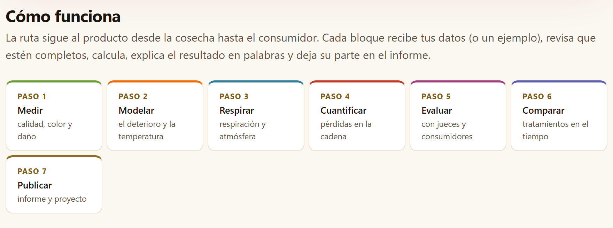

La cita del programa es la que da la propia app, lista para copiarse, en la sección Cómo citar de su portada y al pie del Bloque 9. El identificador digital (DOI) se añadirá a las dos citas cuando el programa se publique con uno.
PostHarvestPro funciona por completo dentro de tu navegador. Las tablas que abres o pegas se leen en tu computadora y nunca se envían a ningún servidor: puedes trabajar con los datos de un ensayo en curso, de una empresa o de una tesis sin que salgan de tu equipo. El programa no usa cuentas, no carga nada de internet y no necesita conexión para calcular.
Las ilustraciones, los diagramas y las capturas de pantalla de este manual son originales: se generaron con el propio programa o con código escrito para el manual. Todas las cifras salen de los datos de ejemplo simulados de la app —mango, chayote, aguacate, jitomate y café generados con modelos y parámetros del orden de los publicados—. No son mediciones de ningún lote, huerto ni panel reales.
El manual sigue el mismo orden que la app: nueve bloques numerados que se recorren de arriba abajo en la barra de la izquierda. Cada capítulo explica un bloque y lleva su mismo número —el capítulo 4 es el Bloque 4, y sus secciones y figuras se numeran 4.1, 4.2…—. La introducción no lleva número: sus secciones son I.1, I.2…
Cada capítulo empieza con lo que el bloque resuelve en el manejo de un producto después de la cosecha, sigue con sus herramientas en el orden de sus pestañas y cierra con las reglas para leer el resultado y los errores más comunes. No hace falta leerlo de corrido: si sólo necesitas la vida de anaquel de un lote, basta el capítulo 3; si vas a diseñar un empaque, el 4 y el 8; si preparas una cata, el 6. El apéndice B reúne las reglas y las fórmulas de todos los bloques.
El color del bloque aparece en la apertura de su capítulo, en el número de cada sección, en la pestaña del borde de la hoja y en el índice, y es el mismo de la franja de la portada. La barra de la app nombra algunos bloques con una forma corta (Vida de anaquel, Pérdidas, Sensorial, Ensayos); el título del bloque, arriba de sus pestañas, da el nombre completo.
| Bloque | Nombre en la app | Qué hace |
|---|---|---|
| 1 | Inicio | La ruta de trabajo, los nueve bloques, los diez conjuntos de ejemplo, los métodos con su fuente, la poscosecha en lenguaje llano, las referencias y cómo citar |
| 2 | Calidad y madurez | Índices de calidad, color CIELAB, calculadoras de laboratorio, escalas y calibres |
| 3 | Cinética y vida de anaquel | Órdenes de reacción, temperatura, pruebas aceleradas y tiempo hasta el rechazo |
| 4 | Respiración, etileno y atmósferas | Tasas de respiración, climaterio, empaque en atmósfera modificada y preenfriamiento |
| 5 | Pérdidas y cadena de valor | Cantidad y valor perdidos por etapa, puntos críticos, simulación y daño mecánico |
| 6 | Evaluación sensorial | Pruebas discriminativas, afectivas y descriptivas, con el diseño de las catas |
| 7 | Ensayos poscosecha | Factoriales tratamiento × tiempo, medidas repetidas, pendientes y aleatorización |
| 8 | Empaque y logística | Carga, ventilación, ambiente de la cámara, costos, compatibilidad y unidades |
| 9 | Informe y proyecto | Todo lo que calculaste en un documento para compartir, y tu trabajo en un archivo para seguir después |
Aclaraciones y consejos prácticos que ahorran tiempo.
Lo que puede cambiar tus conclusiones si se pasa por alto.
La idea detrás de un cálculo, sin fórmulas innecesarias.
Un caso con los datos de ejemplo del programa, con los números que da la app.
| Si el resultado cae en este caso… | entonces esta es la lectura recomendada. |
Son guías para interpretar, no leyes: lo que sabes del cultivo, del cultivar y de cómo se condujo el ensayo siempre manda.
Lo que suele fallar al usar el bloque —una columna mal elegida, una tabla en formato ancho, una temperatura fuera del intervalo medido— y cómo se arregla.
| Así se escribe | Significa |
|---|---|
| Cargar ejemplo | Un botón, campo o menú de la app, con su texto tal como aparece en pantalla en español. |
| Bloque 3›Temperatura | Una ruta: abre el bloque y, dentro, la pestaña o la tarjeta que sigue. |
Ctrl + K, mango_temperaturas.csv, firmeza_N | Una tecla, un nombre de archivo o de columna, o un valor que se escribe tal cual. |
| vida de anaquel, límite | El tiempo que un producto se conserva aceptable; el valor de un atributo (25 N de firmeza, por ejemplo) a partir del cual deja de serlo. El apéndice C define todos los términos. |
| k, Eₐ, Q10 | La constante de velocidad del deterioro, la energía de activación y el factor por el que se acelera con 10 °C más (capítulo 3). |
| 25.9 d · 59.4 mg CO₂ kg⁻¹ h⁻¹ | Los números se escriben con punto decimal, como los escribe la app, y con la unidad separada por un espacio. |
Entre la cosecha y el consumidor un fruto respira, pierde agua, se ablanda, cambia de color y, tarde o temprano, se rechaza. Medir esos cambios es sólo la mitad del trabajo; la otra mitad es convertirlos en decisiones: cuánto dura un lote, a qué temperatura guardarlo, qué empaque usar, dónde se pierde más y si el consumidor nota la diferencia. PostHarvestPro hace esa segunda mitad.
Es un programa de fisiología y tecnología poscosecha que corre en el navegador, sin instalar nada. Reúne en un solo lugar los cálculos que acompañan a un producto hortofrutícola desde la cosecha hasta el consumidor, y cada resultado lo explica en palabras y dice de qué método y de qué fuente sale.
Calcula los índices de calidad y madurez y el color en CIELAB con sus diferencias; ajusta la cinética del deterioro y predice la vida de anaquel a una temperatura o a cualquiera, incluido el tiempo hasta el rechazo con frutos que siguen sanos al terminar el ensayo; mide la respiración y el etileno, reconoce el climaterio y diseña atmósferas modificadas, el preenfriamiento y su carga térmica; cuantifica las pérdidas de una cadena en kilos y en dinero y el daño mecánico; analiza la evaluación sensorial discriminativa, afectiva y descriptiva y diseña las catas; analiza los ensayos poscosecha con muestreo destructivo o con los mismos frutos en el tiempo; resuelve las cuentas de empaque, almacén y transporte; y al final arma un informe con recomendaciones de manejo.
Está pensado para la docencia y la investigación en poscosecha, para el control de calidad de empacadoras y comercializadoras, y para quien asesora a productores. Todo se calcula con motores escritos desde cero para este programa, sin bibliotecas de otros, y cada método cita el trabajo que lo define: en la portada de la app, al pie de cada resultado y en los métodos del informe.

Una buena manera de saber si el programa te sirve es ver qué preguntas contesta, y en qué bloque.
| Pregunta | Bloque |
|---|---|
| ¿Cómo cambian la firmeza, los sólidos solubles, la acidez y el color de cada lote en el tiempo? ¿Cuál es su SST/AT? | 2 |
| ¿Qué tan distintos son dos colores, y cuál es el índice de daño o la fruta comercializable de cada lote? | 2 |
| ¿Con qué orden de reacción se pierde la calidad, y cuántos días tarda en llegar al límite aceptable? | 3 |
| ¿Cuánto dura el producto a 5 °C si sólo lo medí a 13, 20 y 25 °C? ¿Cuánto acelera el deterioro cada 10 °C? | 3 |
| ¿Qué recubrimiento retrasa más el rechazo, contando los frutos que seguían sanos al final? | 3 |
| ¿Cuánto respira el producto y cuánto calor libera? ¿Es climatérico? | 4 |
| ¿Qué película y qué espesor llevan la atmósfera del empaque a la ventana recomendada? ¿Cuánto tarda en enfriarse y qué equipo hace falta? | 4 |
| ¿En qué etapa de la cadena se pierden más kilos y más dinero, y dónde rinde más invertir? | 5 |
| ¿Desde qué altura de caída se daña el fruto? | 5 |
| ¿Notan los jueces la diferencia, cuántos jueces necesito, qué producto gusta más y qué atributo lo penaliza? | 6 |
| ¿Difieren los tratamientos, en qué tiempos, y cuál cambia más rápido? | 7 |
| ¿Cuántas cajas caben por tarima y por contenedor? ¿Cuánta agua pierde el producto en la cámara? ¿Pueden ir juntos dos productos? | 8 |
| ¿Cómo entrego los resultados, con sus métodos y unas recomendaciones de manejo? | 9 |
Todo lo que sigue descansa en seis ideas. Si te quedas con ellas, buena parte de los errores que se cometen al analizar datos de poscosecha ya no son posibles.
Cada herramienta que analiza una tabla tiene la misma entrada de datos: Cargar ejemplo, Abrir archivo (CSV, TXT, XLSX, ODS), Pegar una tabla o soltar el archivo en el recuadro. Después, la app propone qué columna cumple cada papel —tiempo, grupo, atributo, consumidor, producto…— por su nombre, y tú confirmas o cambias la propuesta. Las herramientas de cálculo directo (las calculadoras de laboratorio, la temperatura, la atmósfera modificada, todo el Bloque 8) se llenan escribiendo en sus campos o en tablas editables, donde + Agregar fila añade una línea y × la quita.
| Entra | Formato y dónde |
|---|---|
| Tablas de datos | CSV, TSV o TXT separados por coma, punto y coma o tabulador (con punto y coma o tabulador se entiende la coma decimal), y libros XLSX, XLSM u ODS; si el libro tiene varias hojas, aparece un selector. Siempre en formato largo: una fila por unidad observada (fruto, frasco, consumidor por producto) y una columna por variable |
| Celdas pegadas | Copiadas de una hoja de cálculo, con los nombres de las columnas en la primera fila |
| Faltantes | Las celdas vacías, NA o — se toman como faltantes |
| Proyectos | Un .json guardado antes por la propia app (Bloque 9) |
| Sale | Formato |
|---|---|
| Figuras | Evolución de los atributos, color, curvas cinéticas, Arrhenius, Kaplan–Meier, respiración, plano O₂–CO₂, Sankey, curvas de daño, psicométricas, penalidades, araña, mapas, perfiles de los tratamientos, tarima y carta psicrométrica, entre otras: en SVG o en PNG a 300 ppp, y en el estudio de figuras de la suite |
| Tablas | Cada tabla de resultados en CSV o XLSX, lista para una hoja de cálculo |
| Informe | Un solo archivo HTML con portada, resumen, una sección por análisis con sus figuras, tablas e interpretación, recomendaciones de manejo, métodos, referencias y cita; se imprime a PDF desde el navegador |
| Planes de trabajo | El plan de servicio de una cata (CSV) con sus fichas para imprimir, y el libro de campo aleatorizado de un ensayo (CSV o XLSX) |
| Para otras apps | La cadena de pérdidas para EconomicsPro, las medias de un perfil descriptivo para PCAPro y el libro de campo para AgriDesign, de la misma suite |
Sólo un navegador moderno, en una versión de los últimos años, en una computadora, una tableta o un teléfono. No hace falta instalar nada ni tener internet; el programa entero cabe en una carpeta.
index.html. Es lo más sencillo y funciona igual que todo lo demás: los cálculos y los diez conjuntos de ejemplo están dentro del programa.Open PostHarvestPro.bat. Abre un servidor local mínimo en el puerto 9970 y la app en http://localhost:9970. Sólo hace falta para abrirla desde otro equipo o una tableta de la misma red; el archivo server.ps1 explica cómo.Las preferencias —el idioma, el tema claro u oscuro y la última pestaña que abriste en cada bloque— se guardan en el propio navegador y se recuerdan la siguiente vez. Los datos no: cada vez que abres la app empieza vacía. Para retomar un trabajo está el proyecto .json del Bloque 9, que guarda las tablas que cargaste, las columnas que elegiste, las tablas editadas y los ajustes, y al abrirlo recalcula todo. Si intentas cerrar la pestaña después de haber trabajado, la app te lo advierte.
Este mismo manual se abre desde la app: el enlace Manual de usuario (en español) está al pie de su portada (Bloque 1); con la interfaz en inglés, el enlace lleva a la edición inglesa.
Todas las aplicaciones de la suite comparten la misma barra, la misma navegación y las mismas herramientas de figuras, así que lo que aprendas aquí te sirve en las demás.

1 2 3 4 5 6 7 8 9 10 11 12?).Ctrl + K). Un bloque, una sección, un control o una figura, por su nombre.Al pie de cada bloque dos botones llevan al anterior y al siguiente. Cuando cambias un control y los resultados se recalculan más abajo, aparece un botón flotante que te regresa al control que tocaste, y otro para volver arriba. Los resultados se rehacen solos: al cambiar un ajuste, al instante; al cargar datos nuevos —un ejemplo, un archivo, una tabla pegada u otra columna—, el análisis corre dentro de la espera de la suite, que sólo aparece, con el aviso Analizando los datos…, si tarda más de un momento. Casi todo se puede hacer también desde el teclado:
| Tecla | Qué hace |
|---|---|
Alt + ← · Alt + → | El bloque anterior o el siguiente; en el modo enfocado, la tarjeta anterior o la siguiente |
Ctrl + K | Buscar un bloque, una sección, un control o una figura |
[ | Contraer o abrir la barra de los bloques |
← · → sobre las pestañas | La pestaña anterior o la siguiente del bloque |
? | Ver la lista de atajos |

Ctrl + K) con «vida de anaquel» escrito: encuentra el Bloque 3, las tarjetas que tratan de la vida de anaquel, dos figuras —que se abren en el estudio de figuras— y los campos de la prueba acelerada. Enter lleva al resultado elegido.Debajo de cada análisis hay tres cosas además de las figuras y las tablas: unos mosaicos con las cifras que importan (el orden elegido, la vida al límite, el valor p), una lectura en palabras de lo que significan para el producto, y la línea Método y fuente: con el método y la cita. Cuando algo merece cuidado —una extrapolación, una recta con R² bajo, un tiempo que no tienen todos los tratamientos— un aviso lo dice en el mismo lugar.
Todas las figuras de la app se pueden abrir en el estudio de figuras, una ventana común a la suite donde se cambian los textos, el tamaño de la letra, la leyenda y los colores sin tocar los datos, y se exporta a PNG, SVG, PDF o TIFF a 300, 600 o 1200 ppp. Junto a cada figura, el botón ✎ abre el editor de la figura, y dos botones rápidos la descargan en SVG o en PNG de 170 mm a 300 ppp. Las descargas y el informe escriben siempre los colores del tema claro, aunque estés trabajando en el oscuro. El capítulo 9 lo explica a fondo.
Para aprender sin datos propios, la app trae diez tablas simuladas: se generaron con modelos y parámetros del orden de los publicados para cada cultivo, con una semilla fija, así que siempre son las mismas. No son mediciones: sirven para aprender la app y para ver que cada análisis responde como se espera. Cada herramienta las ofrece con Cargar ejemplo y las marca con el sello SIMULADO, y la sección Datos de ejemplo de la portada las reúne con un botón para abrir cada herramienta con su ejemplo cargado y otro para descargar el CSV.

data/ de donde salen, su número de filas y los botones Abrir en … que llevan a cada herramienta con el ejemplo cargado.| Archivo | Contenido | Filas | Bloques |
|---|---|---|---|
mango_temperaturas.csv | Mango «Ataulfo» a 13, 20 y 25 °C; 4 frutos por temperatura y día: firmeza, L*a*b*, sólidos solubles, acidez, pH, pérdida de peso y antracnosis | 72 | 2 3 7 |
chayote_rechazo.csv | Chayote con testigo, cera vegetal y quitosano a 10 °C, 30 frutos cada uno: días hasta el rechazo; el ensayo terminó a los 35 días | 90 | 3 |
chayote_peso.csv | Los mismos tratamientos: 6 frutos marcados por tratamiento, pesados cada 5 días hasta el día 25 | 108 | 7 |
aguacate_estatico.csv | Aguacate «Hass» en 3 frascos de 3.8 L a 20 °C: CO₂, O₂ y etileno cada 30 minutos | 15 | 4 |
aguacate_climaterico.csv | Respiración y etileno diarios durante 12 días a 20 °C | 13 | 4 |
jitomate_cadena.csv | Seis etapas de una cadena de jitomate saladette, de la cosecha al menudeo: pérdida y precio | 6 | 5 |
jitomate_caidas.csv | 10 frutos por altura de caída, de 10 a 60 cm: masa, energía, área y volumen del daño, y si se dañó | 60 | 5 |
cafe_discriminativas.csv | Triangular, dúo-trío y 2-AFC entre dos cafés: aciertos y jueces | 3 | 6 |
cafe_consumidores.csv | 80 consumidores × 4 cafés: agrado de 9 puntos, punto justo de acidez, amargor y cuerpo, y 10 términos CATA | 320 | 6 |
cafe_descriptivo.csv | 8 jueces × 4 cafés × 2 sesiones, 7 atributos de 0 a 10 | 64 | 6 |
Las herramientas que no leen una tabla —las calculadoras, la temperatura, la prueba acelerada, el flujo continuo, la atmósfera modificada, el preenfriamiento, la simulación de mejoras, las fichas de cata, la aleatorización y todo el Bloque 8— abren con valores de ejemplo ya escritos en sus campos, para que el resultado se vea desde el principio.
La firmeza del mango de ejemplo baja de unos 116 N a 32 N en 21 días a 13 °C, y de 122 N a menos de 5 N en 12 días a 25 °C. En el Bloque 3 la app elige el primer orden en las tres temperaturas, con k = 0.0612, 0.1569 y 0.2508 por día, y calcula que la firmeza llega al límite de 25 N a los 25.9, 10.4 y 6.3 días. Con esas tres constantes, Arrhenius da una energía de activación de unos 84 kJ/mol. Es el ejemplo que dibuja la portada de este manual.
Todas las capturas y todas las cifras de este manual salen de los datos de ejemplo simulados, con los valores por omisión de cada control salvo que el texto diga qué se cambió. Se dice «el mango del ejemplo», nunca como si fuera un lote real.
Los bloques siguen al producto desde la cosecha hasta el consumidor. No hace falta pasar por todos ni en orden: cada pestaña trabaja con sus propios datos, y lo que calcules deja su sección en el informe. La sección Cómo funciona de la portada resume la ruta en siete pasos.

Llevar las k al análisis de temperatura → copia las constantes de los modelos cinéticos a la pestaña Temperatura cuando el grupo es la temperatura; la pestaña Simular mejoras trabaja sobre la cadena de Pérdidas por etapa; y el Bloque 9 junta las secciones de las herramientas que usaste en los demás. La palomita de un bloque en la barra se enciende cuando ya tiene un resultado.
Un programa de cálculo vale lo que valen sus números. Cada motor de PostHarvestPro se programó desde la fórmula publicada y se comparó, número por número, con una implementación independiente: el entorno estadístico R (versión 4.4.2) y sus paquetes de referencia para la cinética no lineal, el análisis de supervivencia, la evaluación sensorial y el análisis de ensayos; tablas publicadas para el color y la psicrometría; y cálculos a mano escritos en las propias pruebas para las calculadoras. Cada comparación lleva escrita su tolerancia.
tests/run.html y en la consola con node tests/run-node.js. La tabla de abajo las reparte por motor.| Área | Pruebas | Comparaciones | Referencia |
|---|---|---|---|
| Núcleo numérico | 6 | 534 | Distribuciones, regresión, valores propios, ajuste no lineal y ajuste de valores p de R |
| Color | 6 | 1 115 | Conversiones y ΔE de un paquete de color de R; los 22 pares publicados de Sharma, Wu y Dalal (2005); los índices de blancura, amarillez y jitomate a mano |
| Referencias | 2 | 96 | Que cada fuente de la lista de métodos esté en la lista de referencias |
| Calidad | 4 | 28 | Cálculos a mano (acidez, humedad, McKinney, calibres) |
| Respiración y atmósferas | 3 | 19 | Cálculos a mano (balances de gas, estado estacionario, enfriamiento) |
| Pérdidas y daño | 3 | 45 | Regresión lineal y logística de R e intervalo de Fieller |
| Logística | 3 | 36 | Tablas de saturación de ASHRAE (2017) e identidades psicrométricas |
| Cinética | 233 | 18 932 | Mínimos cuadrados no lineales de R con dos algoritmos y regresión lineal |
| Tiempo de falla | 143 | 38 488 | Kaplan–Meier, rango logarítmico y modelos paramétricos de dos paquetes de supervivencia de R |
| Sensorial | 32 | 11 669 | Paquetes de R de análisis sensorial, análisis factorial y comparaciones múltiples |
| Ensayos | 8 | 242 | Análisis de varianza de tipos I y III, Tukey, Dunnett, medidas repetidas con Mauchly y comparación de pendientes en R |
| Figuras | 6 | 74 | Geometría y texto escritos en la prueba: miles en los ejes, rótulos que no se enciman, trazos distintos y el signo de porcentaje de cada idioma |
| Total | 449 | 71 278 | 0 fallas |
La comparación también sirvió para corregir. Atrapó, entre otros, un corte del rango estudentizado que anulaba probabilidades con cinco o más medias, unos errores estándar de la regresión logística calculados con los pesos de la penúltima iteración y un optimizador que se daba por convergido junto al polo de una curva de segundo orden; los tres se corrigieron antes de la versión 1.0. Los detalles, con las tolerancias de cada prueba, están en la carpeta tests/validacion/, que es la única parte del programa que nombra paquetes de software: la app y el resto de este manual describen los métodos y citan los artículos.
Saber dónde termina una herramienta es tan útil como saber qué hace. La portada de la app lo dice en Lo que no hace, y los capítulos lo repiten donde importa:
| No hace | Por qué, y qué hacer |
|---|---|
| Reemplazar la medición | Los modelos resumen los datos; extrapolar lejos de las temperaturas, los tiempos o los cultivares medidos queda bajo tu responsabilidad, y la app avisa cuando ocurre. |
| Traer normas comerciales | Las tablas de calibres, permeabilidades de películas, ventanas de atmósfera y compatibilidad son orientativas y editables: usa las de tu norma, tu película y tu cultivar. |
| Modelar la cinética no isotérmica | Las predicciones son a temperatura constante; para una historia de temperaturas variable hay que integrar k(T(t)) en el tiempo. |
| Simular la dinámica del empaque | La atmósfera modificada se calcula en estado estacionario, con película sin perforaciones y sello perfecto; no el tiempo que tarda en llegar a él. |
| Leer instrumentos | No se conecta a texturómetros, colorímetros ni cromatógrafos: trabaja con las tablas que exportan. |
| Subir tus datos | No hay servidor, cuentas ni conexión: lo que guardas es un archivo de proyecto en tu equipo. |